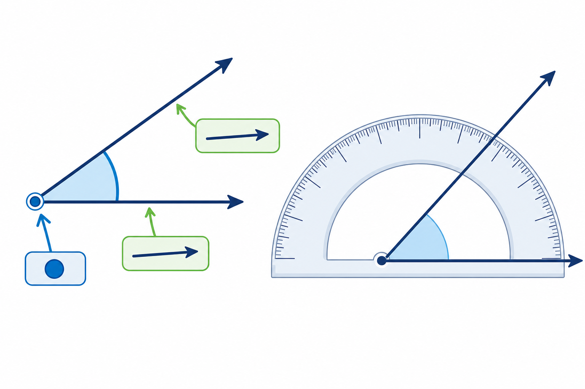

Co to jest? Що це?
Kąt to figura z dwóch półprostych o wspólnym początku (wierzchołku).
Кут — фігура з двох півпрямих зі спільним початком (вершиною).
Jak w szkole? Як у школі?
Zapis: ∠AOB. Środkowa litera to wierzchołek.
Запис: ∠AOB. Середня літера — вершина.
Przykład z życia Приклад з життя
Otwarte nożyczki tworzą kąt ∠AOB — dwa ramiona ze wspólnym początkiem.
Відкриті ножиці утворюють кут ∠AOB — дві сторони зі спільним початком.
∠AOB